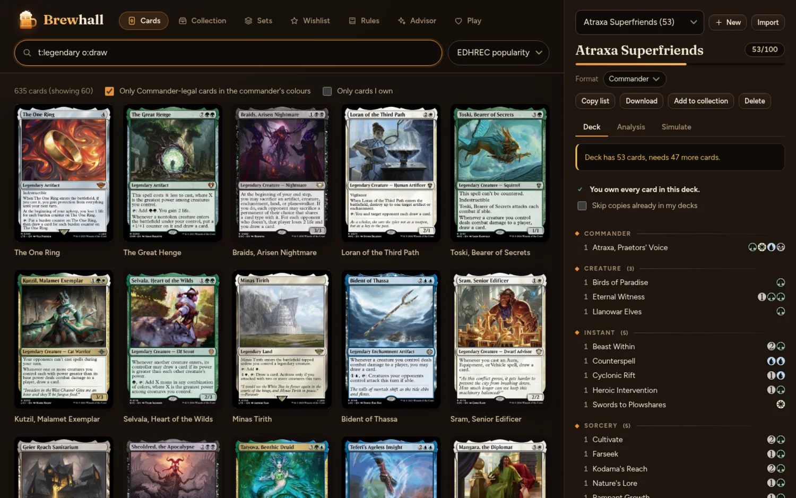
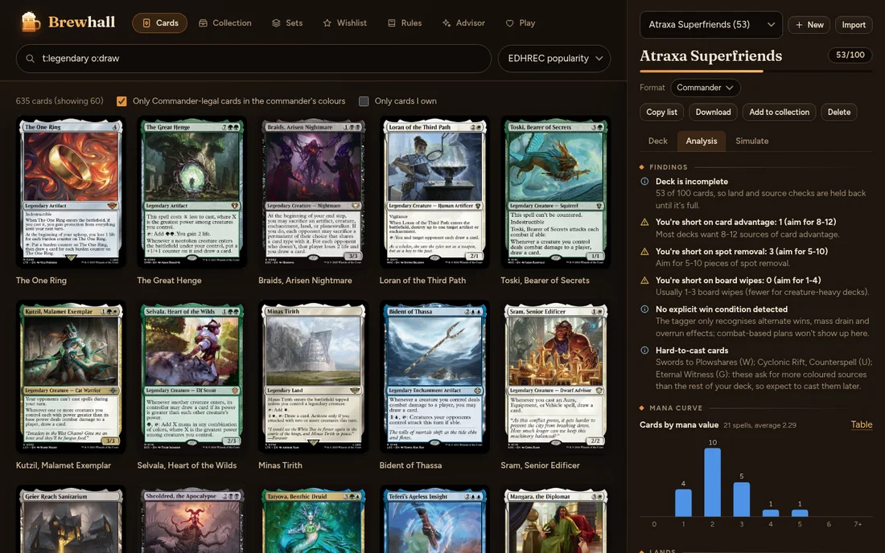
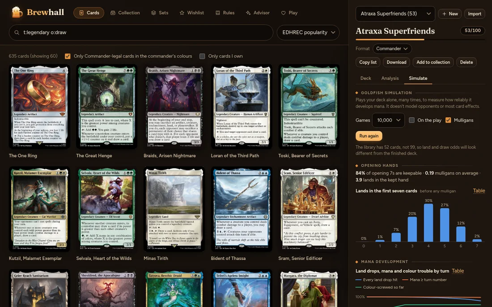
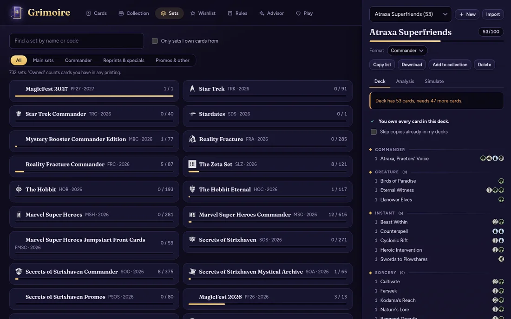
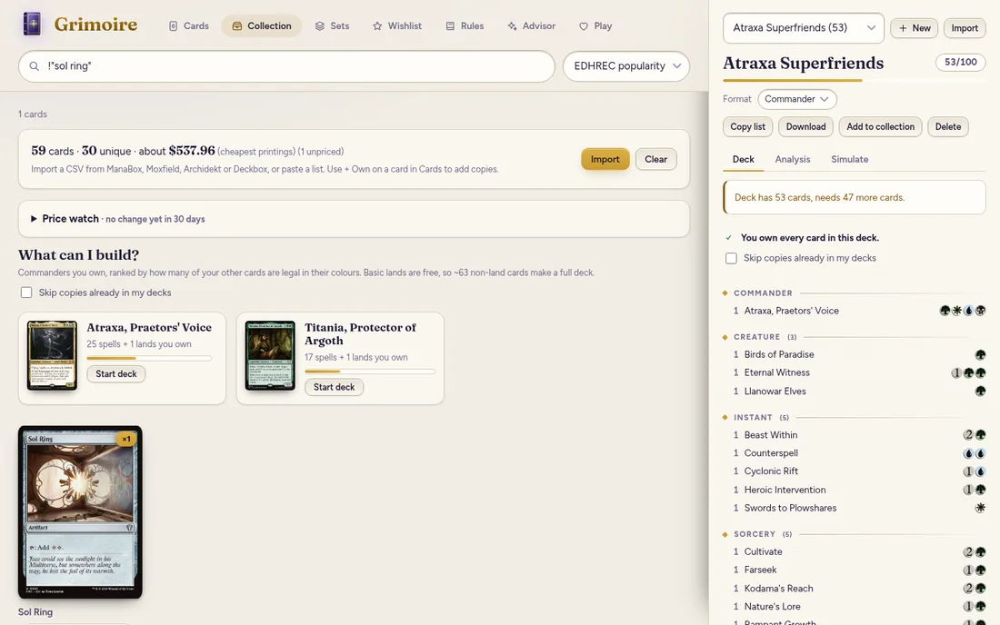
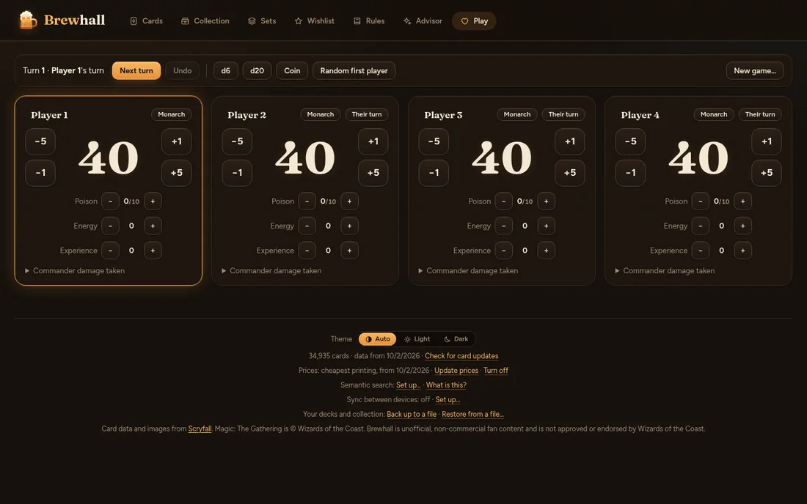
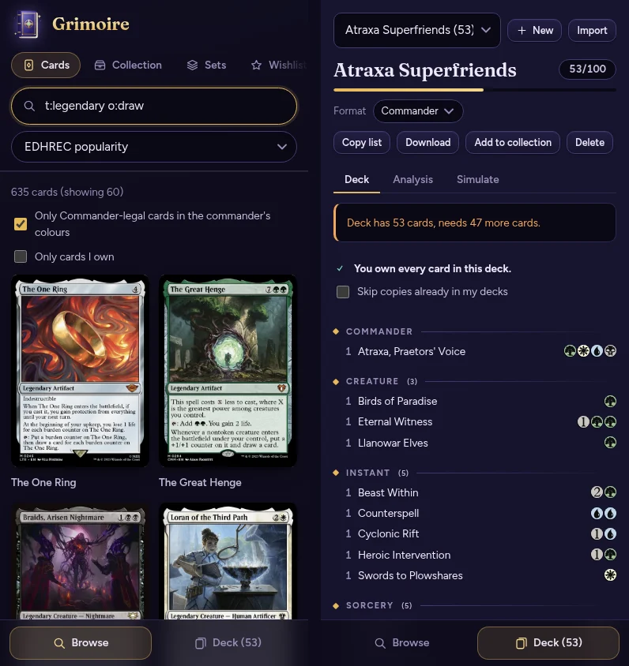

Free, offline, yours
A spellbook for every deck.
A free Magic: The Gathering deck lab that lives on your computer. Search every card, build and analyse Commander decks, simulate your mana, track your collection and your games. No account, no subscription, no paywall.
All versions are on the releases page. Free and open source (MIT).

What it does
Fast, offline card search
All ~35,000 cards in a local database, with Scryfall-style syntax (t:creature c:rg cmc<=3) and function tags like otag:ramp.
Search by meaning
Optional: describe what you want, about:"punish opponents for drawing", using a small language model that runs on your computer.
Commander deck builder
Colour identity, singleton, legality and partner rules checked as you build. Import and export Moxfield, Archidekt and plain-text lists.
Deck analysis
Mana curve, colour pips, land and colour-source recommendations, and a "you're short on ramp" report.
Goldfish simulator
Plays your deck thousands of times to measure land drops, colour trouble, mulligans and when your commander comes down.
Collection tracker
Import from ManaBox, Moxfield, Archidekt or Deckbox. See what each deck still needs and which commanders you can build.
Card details
Rulings, legality in 8 formats, prices and community tags for any card, all offline after the first download.
Set browser
Browse every set, see how much of it you own, what is missing and about what the rest would cost.
Card scanner (Android)
Point your phone's camera at a card and it is added to your collection or deck, as the exact printing. The card is read on your phone.
Table tools
A life and commander-damage tracker for 2 to 6 players, with counters, turn order, undo and dice.
Your data stays yours
Decks and collection live in a folder on your computer. One click backs them up to a file.
A look inside






Install
Windows
- Download Grimoire-Setup-….exe and run it. It installs just for you and needs no administrator rights.
- Windows may show "Windows protected your PC", because Grimoire is a new, free app that isn't signed with a paid certificate. Choose More info, then Run anyway. You can check the code yourself, or the file's checksum on the releases page.
- Open Grimoire. On first start it downloads the card database (about 25 MB) once.
Linux (AppImage)
- Download Grimoire-….AppImage, make it executable (
chmod +x Grimoire-*.AppImage, or tick "Allow executing as a program" in your file manager's properties) and double-click it. - If it won't start on Ubuntu 24.04 or newer, run it once with
--no-sandbox, or use the .deb instead.
Linux (.deb)
- Download Grimoire-….deb and install it with your software centre, or
sudo apt install ./Grimoire-*.deb. New versions are installed the same way.
Android
- On your phone, download Grimoire-….-android.apk from the Android button above (or the releases page: look for the release called "Grimoire for Android") and open it.
- Android asks you to allow installs from your browser or file manager, because Grimoire isn't on an app store. Allow it for this one install.
- Open Grimoire. The card database is already inside the app, so it starts straight away. It keeps its card data up to date by itself, weekly, over Wi-Fi (on mobile data it only tells you an update is waiting).
- Optional: every release is signed with the same certificate. Its SHA-256 fingerprint is
a79ce007a065e32b8fb6120e2362295a009174061b529069c1b598c9550dbbd1, and each release lists the file's checksum.
The app tells you when a newer version is out (a banner with a Download button). Your decks and collection are kept when you update. You can also follow the project with Obtainium.
Windows and the Linux AppImage update themselves: Grimoire checks for new versions, downloads them in the background and asks before installing. You can turn that off in the Help menu.
Privacy
No account of ours, no tracking, no analytics. Everything you create stays on your device unless you turn on Sync. Grimoire contacts the internet only to:
- Scryfall, to download card data (once, then when you ask or an update appears) and to show card images.
- GitHub, to check for new versions of Grimoire (can be turned off).
- Camera (Android only): the scanner uses it only while the scanner screen is open. Card names are read on your phone and nothing is uploaded.
- Hugging Face, once, only if you turn on semantic search, to download a 34 MB language model. Your searches are processed on your own device.
- Google Drive, only if you turn on the optional Sync with Google. Your decks, collection and wishlist are then kept in one small file in Grimoire's own hidden storage in your Drive, which only Grimoire can open (it cannot see your other files). Grimoire has no server and sees none of it; you can turn it off, delete the file or revoke access at any time. On Android, signing in passes through a small page on this website that hands the answer straight to the app and keeps nothing. Syncing through a folder you choose (such as one Dropbox keeps in step) is the alternative, with no Google involved.
- Anthropic, only if you turn on the optional Advisor by adding your own API key. Then your questions, and the cards and deck the advisor looks at to answer them, are sent to Anthropic, which bills your account. Your key is kept in your device's keychain and goes nowhere else.